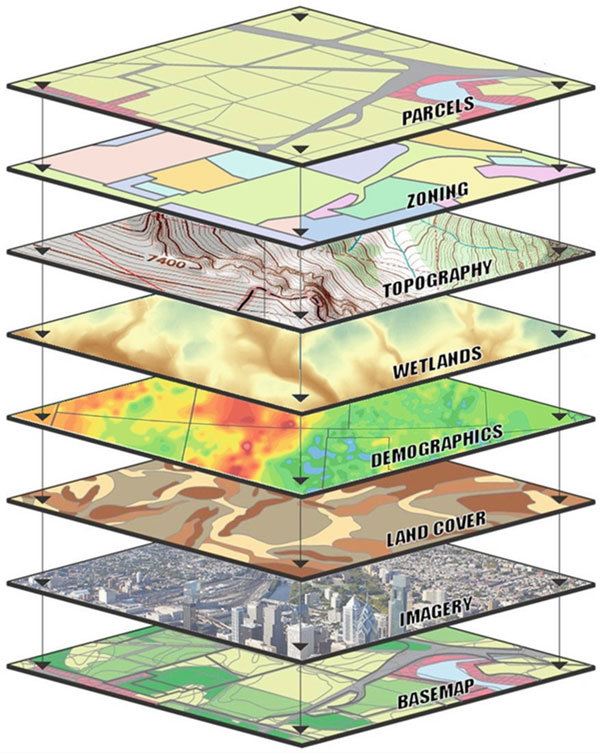
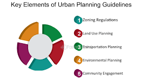
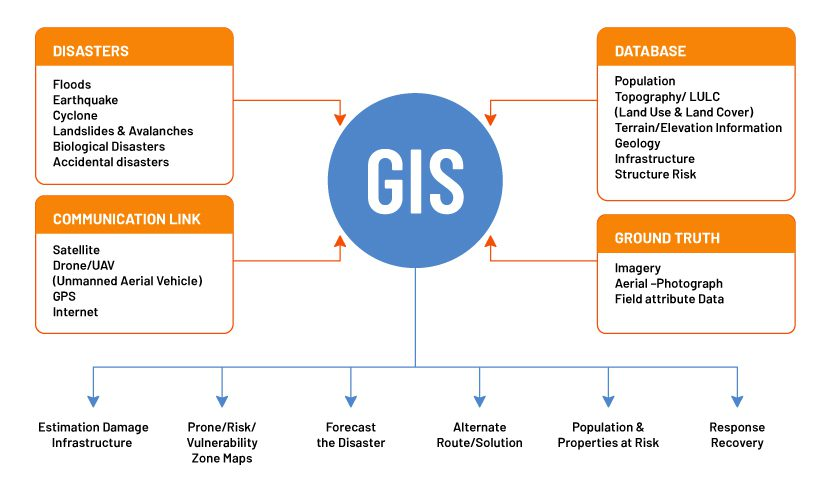

What is Multisource Data
Data integration is the process of combining data from different sources to provide a unified view. This process involves extracting data from diverse sources, transforming it into a consistent format, and loading it into a central repository—often a data warehouse or a cloud-based platform.
Applications of Multisource Data
obtained from or involving more than one source.
- Mapping and security: Maxar's satellite imagery can help with border surveillance and security operations by mapping and protecting large and difficult terrain.
- Infrastructure planning: Maxar's imagery can help with planning and site selection for infrastructure projects like pipelines, power plants, and highways 
- Asset management: Maxar's imagery can help with controlling and maintaining current infrastructure.
- Environmental monitoring: Maxar's geospatial data can help with monitoring poverty, hunger, health, and climate change. 
- Business intelligence: Maxar's satellite imagery can help with building context at scale and creating foundational maps for apps.

Why is Multisource Data Important?
- Enhanced Data Accuracy and Reliability
- Comprehensive Market Analysis
- Reduced Bias and Increased Objectivity
- Improved Forecasting and Risk Management